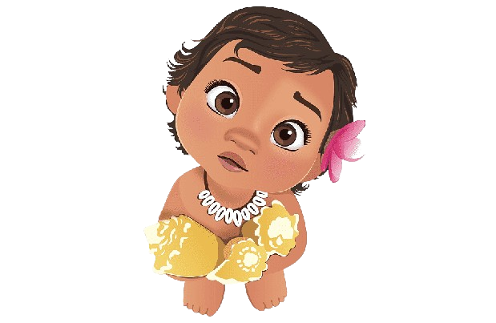

Movimentos
Mover para esquerda
Mover para direita
Mover para cima
Mover para baixo
Girar em sentido horário
Girar em sentido anti-horário
Deslizar
Aponte para direcao
Ir para direcao
Ir para posicao aleatoria
Deslizar ate a posicao aleatoria
Seguir o mouse
Voltar ao inicio
"Dizer" Olá por "n" segundo(s)
Trocar o avatar
"Resetar" o avatar
Trocar cenario
Resetar cenario
Diminuir o avatar
Aumentar o avatar
Esconder o avatar
Mostrar o avatar
Trocar o som
Parar o som
Aumentar volume
Diminuir volume
Modelo
Quantidade de pixel(s):
